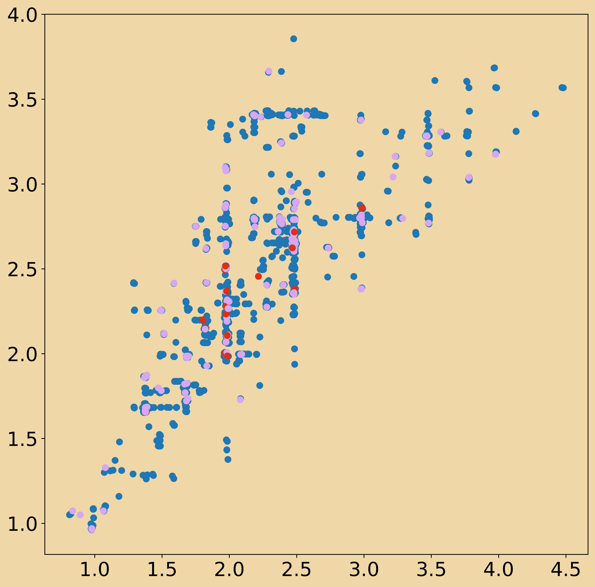

Watermelons without juice and the search for UQ
With high dimensional data, when splitting the data into train-test subsets, it is very unlikely that the test set falls into the convex hull of the training set, thus by measuring performance on the test set, we are likely measuring performance of the extrapolation rather than interpolation capabilities of the model1 (described for dummies here).
The dilema for me is if we are always extrapolating, then somehow the UQ for a model should be defined in terms of the distance from the convex hull. Therefore, I want to investigate the properties of error in prediction for various models w.r.t the distance from the quiered point to the convex hull of the training set.
Subset in convex hull?
First we need an algorithm to see if a point is within the convex hull of the training set.
- Maths
- Algorithm as a linear programming problem Stackoverflow Implementation
We can check this then for the JET Pedestal database for varying input dimensions and splits.
- NB Is the convex hull defined by the point cloud of input variables as well as target variable? Yes probably.
Distance to convex hull?
This is probably tricky, as we would have to calculate the convex hull for a high dimensional space.
Maybe we should instead quantify the distance of the point to the closest point inside the convex hull?
Applications
- Could we make graphs of the error vs distance vs dimenisonality of input space for both the parameter space as well as latent space for DIVA?
- How does error vs distance to hull vary as a function of model? And input space?
References
1.
Balestriero, R., Pesenti, J. & Lecun, Y. Learning in high dimension always amounts to extrapolation.